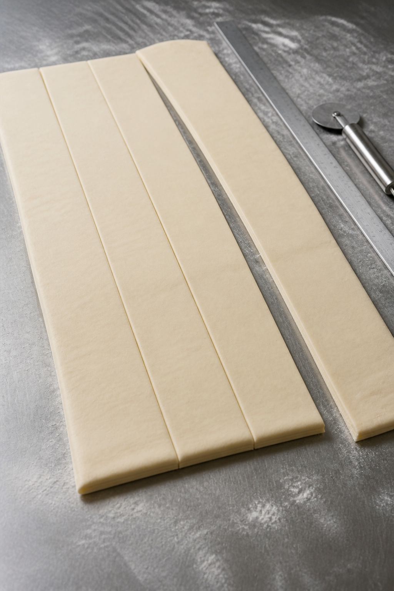
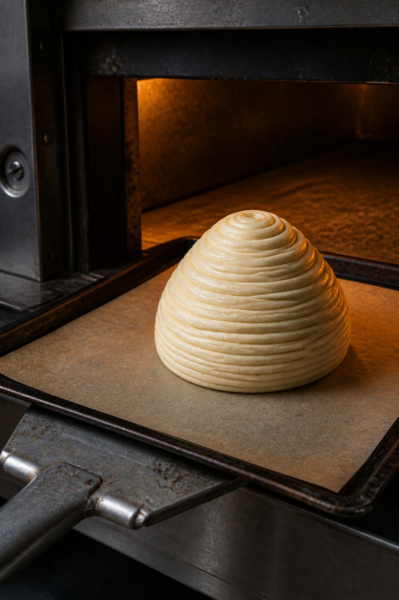
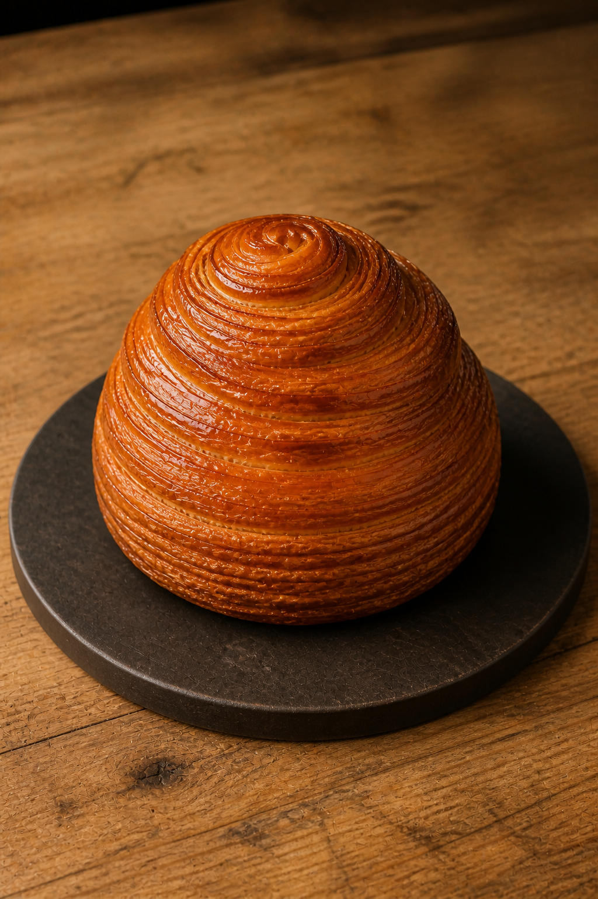
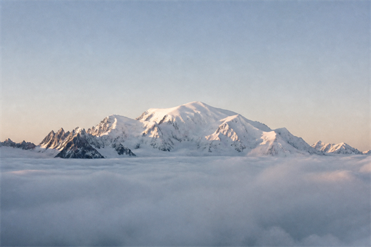
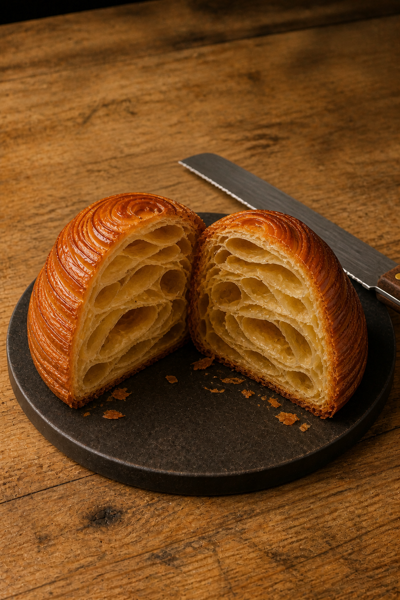
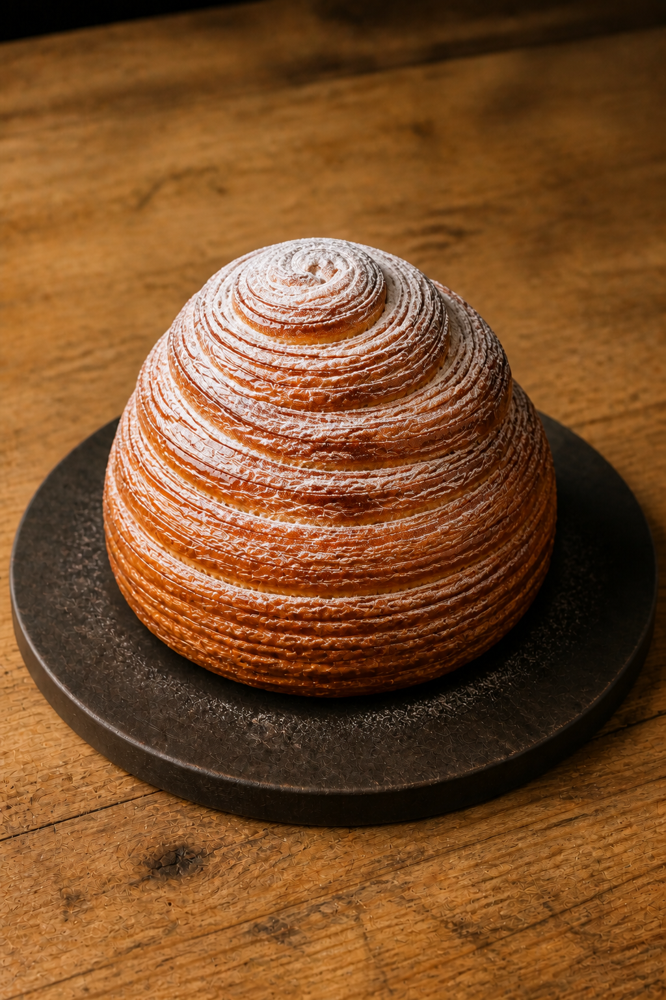

Minimirok · August 2026 · Food Mechanics
No. 07
몽블랑을
굽는 법Mont Blanc, from oven to snow



Sheet, ribbon, coil, heat, pressure, air and snow

4,810m멀리서는 부드러운 흰 곡선이지만, 가까이에서는 바람과 얼음이 새긴 수많은 능선이 모습을 드러낸다.

Food mechanics · 01
빵칼이 정상에서 내려오자 산의 속이 열린다. 커다란 빈 공간은 덜 채워진 자리가 아니다.
heat × steam× butter
수분은 수증기로 팽창하고 버터는 층과 층을 밀어낸다. 겉은 얇게 부서지고 속은 공기를 머금는다. 열과 압력, 시간이 함께 세운 맛의 지형이다.
The return · 눈이 내리다
마지막으로 슈거 파우더를 내리면 식탁 위의 산에도 겨울이 온다. 하얀 가루 사이로 시럽의 호박빛 광택이 눈 녹은 햇살처럼 새어 나온다.
